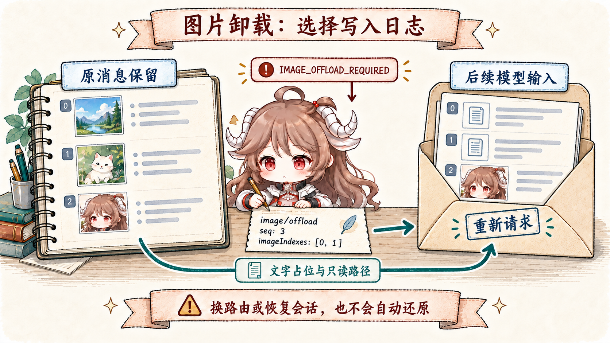

压缩需要为具体请求计价，选择 tool call/result 平衡的区间，提交摘要替换，再在恢复时重建 system、tools、provider config 和 session prefix。
DSH 把它建成一条可审计的状态转换。ctx.tokenMeter 为真实 request envelope 和 current surface 定价；pruner 可先处理纯体积问题；compaction backend 在日志里建立 bracket；一次摘要替换只提交一条带 provenance 的 user/message replacement。
阅读契约。读完以后，你应该能解释：0.8 和 0.16 分别控制什么；为什么低于 pressure 时不能顺手 prune；surface position 怎样决定区间成员；summary request 怎样复用旧 KV cache、未来 request 又从哪里失效；以及 raw log、current surface、request/header 各自负责哪一部分重建。
源码范围。本文依据提交 687f282 的 compaction-basic、图片卸载与 Session 请求重建。预算来自实际 route 的容量和输出上限；缓存命中与计费取决于 provider 的声明和返回值。
一、先为完整请求定价，再决定是否压缩
1.1 按窗口、输出与余量计算触发预算
BasicCompactionEngine 读取最近一次 canonical logged envelope 和同一 log revision 的 current surface。计量因此覆盖 system prompt、tool schemas、routing、assistant completion、tool results，以及已进入日志的 context 与 steering。
预算解析读取 adapter 声明的窗口 W，从最近 request/header 的有效 maxTokens 取得输出预留 O；缺省时用 adapter 默认值，再缺省为 0。额外余量 B = headroomTokens 默认 65,536。触发值为 floor(min(W × thresholdRatio, W − O − B))，默认 thresholdRatio 为 0.8；近期历史预算为 floor((W − O) × retainRatio)，默认 retainRatio 为 0.16；显式 retainTokens 会覆盖这个比例计算。每个精确 provider/model 可以覆盖策略。
| 形状级预算示例 | 值 |
|---|---|
| 窗口 W / 输出预留 O / 余量 B | 1,000,000 / 256,000 / 65,536 |
| 压力触发值 | min(800,000, 678,464) = 678,464 |
| 保留近期历史 | floor(744,000 × 0.16) = 119,040 |
这组数字对应预算测试。摘要调用自身的 maxTokens 默认跟随解析后的 headroom；显式按模型上限优先于显式全局上限。小窗口部署须下调余量，设为 0 时还须提供正数摘要上限。容量缺失、输出加余量耗尽窗口，或保留预算不小于触发值都会让手动 pressure 检查抛错；自动 listener 按目标警告一次并跳过主动压缩，provider 确认的 overflow 恢复仍可尝试。
1.2 只选择完整、平衡、可替换的 surface units
Range selection 从最老的非 system-head 节点开始，把 recent tail 留在右侧，并用 tool-pairing boundary helpers 防止 unanswered call 穿过切口。surface 第 0 项若是 system/message，永不进入压缩范围；之后追加的 system 更新则属于可压缩历史。turn boundary 不会保护一次 runaway turn 里的旧 step；相反，一个仍开放、不可分割的尾部会让 compaction 暂时 decline，等它闭合。
区间按 surface position 选择成员。旧范围被 replacement 后，新事件虽然拥有更高 seq，却占回被遮蔽区间的位置；再次压缩必须按当前位置读取，不能用 start <= seq <= end 猜成员。
二、先做无模型裁剪，再付摘要调用成本
2.1 tool-result pruner 只改模型表面
ctx.toolResultPruner 默认只在 text blocks 合计超过 8192 个 Unicode code points 时动作，保留前 4096、固定 marker 和后 1024。非文本 block 保持相对顺序；切片不会拆 UTF-16 surrogate pair，但可能拆 grapheme cluster。
新 tool/result 复制原 data，仅改 content，并用 surfaceOp: replace 遮蔽原节点；sourceEventSeqs: [originalSeq] 引用被替换结果。裁剪输入来自原节点的当前消息投影，因此已经记录的图片卸载标记也保留在替换内容中。每次 replacement 之前还紧邻追加 compaction/prune，记录被遮蔽节点与启发式 token 价格，供计量投影扣除旧价格。原事件仍在 append-only log；新文本严格变小且不再超过阈值，所以重复扫描不会继续裁剪同一文本。
2.2 达到压力条件后才调用 pruner
低于 pressure 的 step check 不 prune。只有 pressure 或 canonical overflow 已经成立，basic backend 才调用可选 pruner，随后重新用 token meter 测量；若已经安全，就跳过摘要调用。这个顺序把便宜、确定的 syntactic shrink 放在模型调用前，又避免仅因“工具输出看起来大”就破坏仍可复用的 KV prefix。
裁剪限制按 Unicode code point 计算，压缩压力按 token 计量。图片节点使用路由声明的图片价格，日志中的 shadow price 继续使用固定启发式；prune 事件记录旧节点的启发式价格，随后仍要重新计量完整请求。若 pruned tool unit 仍因非文本内容或不可裁部分超窗，或者 system/tools envelope 本身过大，surface compaction 无法修复。
2.3 图片预算溢出由独立的 offload 事件处理

一条工具结果可能只有几百字，却含有多张高成本图片；文本 pruner 无法处理这种压力。image-offload 插件 只响应带 offloadImages 数量的 IMAGE_OFFLOAD_REQUIRED。它按失败请求的消息顺序选最老的 user/tool 输入图片，跳过 assistant 输出与已卸载图片，把消息 seq 和当前 content 数组中的图片出现索引记为 image/offload。
当前工具结果使用一等 role: 'tool' 消息，content 直接容纳文本和图片；pruner 与 offload 都读取该消息的当前投影。agent 请求已经取消时，offload listener 直接交给后续处理，不再追加卸载决定或发起重试。
// 形状级示例：选择当前消息节点 42 的第一张图片
{ type: 'image/offload', data: { targets: [{ seq: 42, imageIndexes: [0] }] } }
// 后续模型请求：该图片变成附件名称和可用只读路径的文字占位
// 原消息事件及其 surface 节点身份不变这条路径没有新建 replacement 节点：消息投影标记被选中的图片，adapter 发出文字占位，token meter 也按这个选择重新计价。Agent 重新生成 request/header 后重试，不消耗 provider retry budget，也不记录 llm/retry。换大模型、恢复会话或后续压缩不会自动还原这些图片；重新读取附件只能创建一次新的图片出现。代价是本次必须先经历 adapter 拒绝，而且缓存从第一条变化消息处不再匹配。
三、一份成功摘要只提交一次区间替换
3.1 五步 bracket 把来源、替换和锁串在一起
compaction/start同步追加，获取 log-recorded lock。- backend 生成 summary，并重新验证选择的 span 没漂移。
compaction/summary记录原始 summary、range、shadowed seqs、token 计量、摘要调用目标及 usage；它是 log-only。- 一条
user/message携带 checkpoint 内容、compactCheckpointSource(compactionId)与surfaceOp: replace；source 的 kind 为compact-checkpoint，其sourceEventSeqs依次引用 start、summary 和全部 shadowed seq，这是摘要提交唯一的 surface replacement。 compaction/end最后释放 lock。
因此模型下一次保留 system head，并看见一个 <compacted-summary> checkpoint 和 recent tail；人类 transcript 与精确审计仍能读旧 append-origin 事件。checkpoint 替换该区间，compaction/* 保持 log-only。
3.2 Convergence 和 changed-span 都必须显式失败
Basic backend 拒绝不比 source 更小的 summary；已成功缩减但压力仍高时，才按 compactionRetries 继续压缩 checkpoint，耗尽后抛错。自动 pre-step listener 捕获操作错误并警告、继续 turn；canonical overflow 恢复则只有 replacement generation 前进才允许重试，即使先完成 pruning、后面的摘要失败也可满足这一条件。没有任何缩减进展时，原 provider 错误保持有效。
摘要请求失败时还有同步 compaction/summary-error waterfall。图片卸载插件只选择这次摘要区间内的图片；一旦记录选择，backend 重新派生消息与计价，再在同一个 bracket 内调用摘要。若之后失败或取消，已经记录的图片卸载仍有效。这些已持久化的卸载选择会改变后续模型输入。待替换区间的其他变化会拒绝过期摘要；关闭 bracket 失败仍会留下阻塞当前 lifecycle 的 orphan start。
四、摘要调用和未来请求有相反的 cache 方向
4.1 摘要调用重放已记录的历史
默认 summarizer直接调用 ctx.llm.stream()：先派生 surface 第 0 项 system 消息，再接被遮蔽区间，传入 header 的 active tools 和 Session.toolHistory()，最后追加摘要指令；空 system head 不产生消息，但仍留在压缩范围之外。指令是无 durable id/source 的冻结 RequestUserInput；重放历史与最终 checkpoint 保持 durable 消息身份。派发前，LLM 层按 route 投影工具定义和 developer 更新；同 route、相同投影前缀才有复用缓存的机会。
工具更新投影会按模型能力选择内容：in-history 保留移除过的定义和更新；addition-only 去掉移除定义与移除消息；不支持更新的 route 使用当前 active tools。缺少 toolHistory，或请求区间没有包含对应更新时，也回到当前定义。换摘要 route、选择非头部区间或卸载图片都可能改变可复用前缀。
调用设置 purpose: 'compaction'，但不改变 model-visible body。只有返回的 text 进入 checkpoint；reasoning 与 tool calls 不进入，image output 以 UNSUPPORTED_CONTENT 失败。
4.2 Replacement 让未来请求从第一个变化 token 起失效
未来 conversation request 的 system、tools 和 replacement 前未改变的 history 仍可复用；从第一个被遮蔽的 token 起，旧 cache 不再匹配，checkpoint 与 recent tail 需要重新计算。KV cache 根据请求字节匹配；保留的原始日志继续服务审计。
五、从消息、请求头和工具历史重建请求
5.1 重建消息、配置与工具历史
deriveMessages() 从 system、developer、user、assistant 和 tool 消息生成当前序列。system prompt 来自 system/message；surface 第 0 项保持稳定头部，后续 system 更新可进入历史。request/header保存 config、adapterDefaults 和 active tools。工具增减由 developer/message 记录：addition 通过 headerSeq 指向当时的完整定义，removal 记录工具名。
foldRequestHeader() 选择日志前缀中的最后一个 canonical snapshot。Session 拒绝空的 optional tools 数组和 adapterDefaults 对象；工具 schema 按顺序比较。reason 支持 initial、resume、change 和 series；surface replacement 或显式新消息系列会记录边界，同时发生 header 变化时带 startsSeries。toolHistory()增量折叠历史 header 与 developer 消息，按历史 headerSeq 还原添加时的定义。重建请求因此要组合消息投影、有效 header 和工具历史，再由目标 route 完成投影。恢复时还要注册 image/offload 等已使用的消息投影定义，Session 才能还原对应内容。
5.2 end-seed 区分 live lock 和旧 crash evidence
最新 unmatched compaction/start 若位于最近 session/end-seed 之后，就是当前 lifecycle 的 live lock，返回 busy；若在 boundary 之前，只是上一进程留下的 stale evidence，不阻塞新 compaction。恢复端根据日志中的锁与生命周期边界完成判断。
六、这套压缩协议带来的工程判断
- 保留原始事件。摘要替换模型可见区间，审计、恢复和人类历史继续读取原始记录。
- 先量 envelope，再量 history。system prompt 或 schemas 已经吃满窗口时，摘要再多轮也救不了。
- 优先确定性 pruning。它可能免掉一次模型调用；自动 pressure 路径必须先确认压力，再裁剪并重新计量。
- Replacement 必须记录来源。checkpoint 没有 compactionId 与 sourceEventSeqs，就无法证明自己替代了什么。
- 缓存判断以 request bytes 为准。缓存复用依赖未改变的请求前缀。
- 摘要是有损的。摘要可能遗漏语义细节；关键路径仍应依赖结构化状态和外部事实。图片 offload 也是持久化的有损选择，换到更大路由后仍保留卸载选择。
下一篇跟踪多个 agent 的 spawn、fork、workflow 与 Ralph loop，观察子会话目录、工具范围、并发和委派深度如何协作。
参考源码
- compaction-basic README 与 区间事务：pressure、retention、summary replay、transaction 与 overflow recovery。
- compaction seam README：服务边界、tool pairing、surface contract 与 durable bracket。
- tool-result-pruner README：code-point budget、content-only replacement 与限制。
- request-header.ts 与 Session README：envelope 重建、surface replacement 与 KV-cache 语义。
- image-offload recovery / offloadOldestImages: 图片选择、持久化投影与两条重试入口。